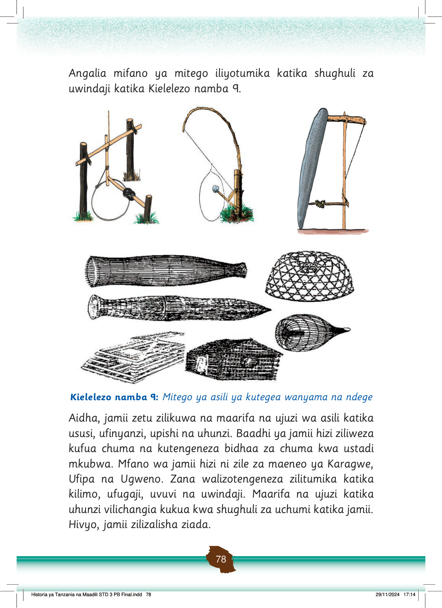

Kazi za kufanya namba 2
Fanya uchunguzi kuhusu shughuli za kilimo, uwindaji, ufugaji au uvuvi zilizopo kwa sasa na kisha fananisha na maarifa na ujuzi wa asili.
Historia ya maarifa na ujuzi wa asili katika jamii
Maarifa na ujuzi wa asili wa jamii vina historia yake.
Maarifa na ujuzi wa asili viliendana na mazingira waliyoishi wanajamii husika.
Shughuli za kilimo, ufugaji, uwindaji, uvuvi na uhunzi zilisababishwa na kuwepo kwa mazingira ya jamii husika.
Kwa mfano, jamii zilizoishi maeneo yenye mvua za kutosha na udongo wenye rutuba zilijishughulisha na shughuli za kilimo.
Jamii zilizoishi kando ya mito, maziwa na bahari zilifanya shughuli za uvuvi.
Maarifa na ujuzi wa asili wa kufanya shughuli za uchumi vililirithishwa kutoka kizazi hadi kizazi.
Wazee wenye stadi husika waliwafundisha vijana kwa vitendo.
Pia, watu maalumu wenye maarifa na ujuzi, kama vile uhunzi, uchongaji na uwindaji walitumika katika kuwafundisha vijana.
Hivyo, kila mwanajamii alikuwa na wajibu wa kufanya kazi na kushiriki katika shughuli za uchumi ili kuendeleza shughuli za kiuchumi katika jamii zao.
Watu ambao hawakufanya kazi walikuwa ni wazee, watoto na wagonjwa.
Makundi haya yaliruhusiwa kuwa tegemezi.
Hii ilisaidia maarifa na ujuzi wa asili kurithiwa kutoka kizazi kimoja hadi kingine.
Jamii ya sasa inao wajibu wa kujifunza maarifa na ujuzi huu wa asili na kuviendeleza.
Jamii zetu kwa sasa zinaweza kurithi maarifa na ujuzi wa asili kwa kushiriki shughuli za kijamii.
Tunaposhiriki katika shughuli hizo tunapata nafasi ya kuona, kusikia na kuiga kwa kutenda.
Pia, jamii ya sasa inaweza kujifunza maarifa na ujuzi huu shuleni na nyumbani.
Historia ya Tanzania na Maadili STD 3 PB Final.indd 79
29/11/2024 17:14